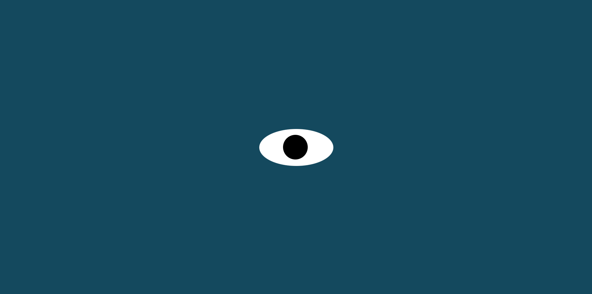

-
Home
-
projects(Current)
Click on the images below to view projects!

This is my pacmen project it creates pacmen and when it hits the border of the page it will bounce off.

This is my moving map project it displays a bus route towards MIT.

This is my moving eyes project the eye will follow your cursor.